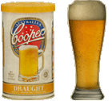
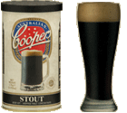
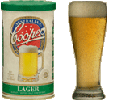

The daily dose of beer or wine was a standard complement to a sailor's life, and the Crew retains that noble tradition. Rarely will you see the Crewman perform without his trusty pewter.
In addition to their on-board duties, three of the crew are experienced brewers. Alex McClennan, John McGowan and Lew Black brew beer both for their own enjoyment, and to produce the working accompaniment to the Home Brew and Sea Songs sessions that are a fixture of the annual Auckland Folk Festival and the Hamilton Easter Folk Festival.
The Crew brew Coopers kits, most commonly Coopers' Draught, Stout and Lager.
  